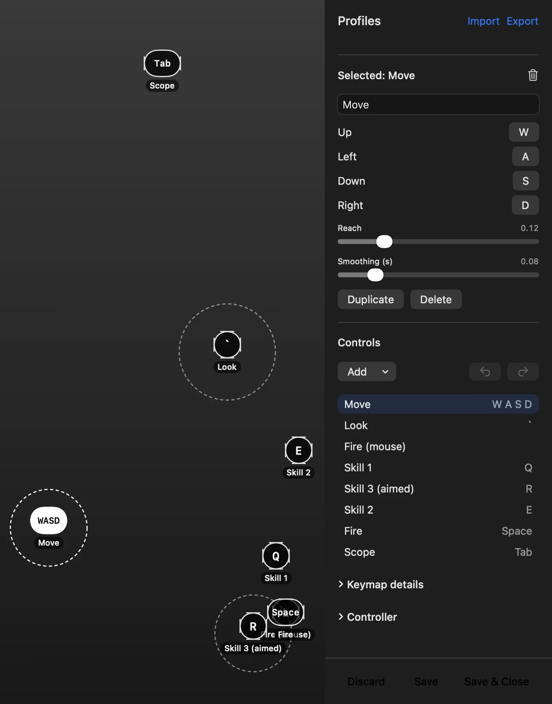
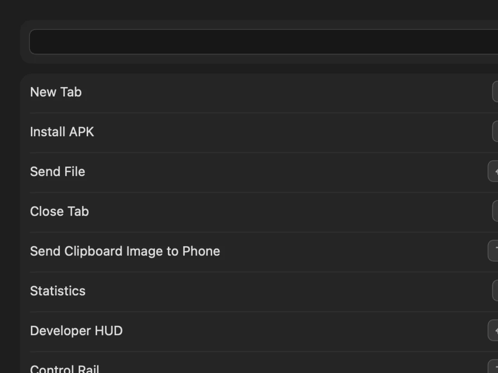
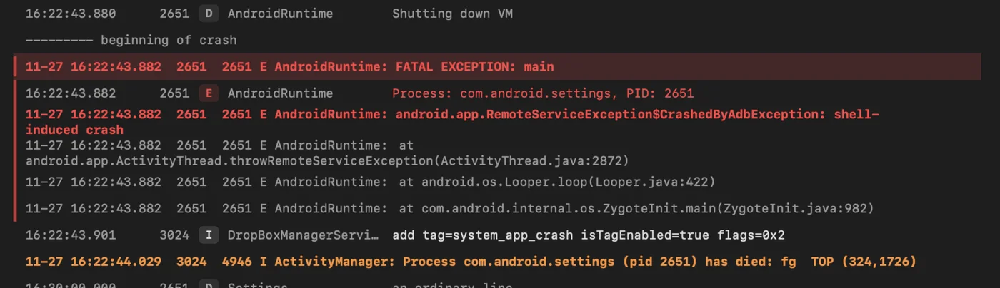

Gulir yang halusSmooth scrolling
Trackpad dan tombol panah menggulir seperti jari, jadi feed meluncur alami.Trackpad and arrow keys scroll like a finger, so feeds fling naturally.
Android Anda. Di Mac.Your Android. On your Mac.
Aplikasi macOS native untuk mencerminkan dan mengendalikan ponsel Android, bermain dengan keyboard, streaming ke OBS, dan membantu kerja developer.A native macOS app to mirror and control an Android phone, play with your keyboard, stream to OBS and help with developer work.
Tiga ikon yang sama bisa dipilih di Pengaturan aplikasi.The same three icons can be chosen in the app's Settings.
Aktifkan USB debugging, sambungkan, lalu klik Start Mirroring. Tidak ada aplikasi yang dipasang di ponsel.Turn on USB debugging, connect, then click Start Mirroring. No app is installed on the phone.
Gambar didekode oleh hardware dan ditampilkan begitu frame tiba. Klik jadi sentuhan, ketikan diteruskan ke ponsel.The picture is hardware decoded and shown as frames arrive. Clicks become touches and typing goes to the phone.
Tekan ⇧⌘B. Jendela jadi bingkai bersih dengan rasio terkunci, siap ditangkap OBS.Press ⇧⌘B. The window becomes a clean, aspect-locked frame, ready for OBS to capture.
Stream lokal tanpa encode ulang, hanya di komputer Anda sendiri (127.0.0.1).A local stream with no re-encoding, only on your own computer (127.0.0.1).
Klik layar di bawah, lalu gerak dengan WASD dan tembak dengan Spasi. Di layar sentuh, geser untuk bergerak.Click the screen below, then move with WASD and fire with Space. On touch screens, drag to move.
Ini simulasi di browser dengan isi contoh, bukan aplikasinya. Angka statistik berasal dari browser Anda.This is a browser simulation with sample content, not the app itself. The statistics come from your browser.
Ganti mode dengan ⌥⌘1, 2, atau 3. Tiap mode punya susunan control rail sendiri.Switch with ⌥⌘1, 2 or 3. Each mode keeps its own control rail.
Trackpad dan tombol panah menggulir seperti jari, jadi feed meluncur alami.Trackpad and arrow keys scroll like a finger, so feeds fling naturally.
Audio ponsel diputar di Mac, atau pakai mikrofon ponsel. Perlu Android 11+.Play the phone's audio on the Mac, or use the phone's microphone. Android 11+.
Jatuhkan .apk untuk install, file lain masuk ke folder Download. ⌘V menempel file dari Finder ke aplikasi ponsel.Drop an .apk to install it; other files go to Download. ⌘V pastes Finder files into phone apps.
Cerminkan satu aplikasi di layar seukuran jendela, tanpa bar hitam.Mirror one app on a display sized to the window, with no black bars.
Keyboard dan mouse menjadi sentuhan. Posisi disimpan sebagai pecahan layar, jadi cocok di berbagai ponsel.Keyboard and mouse become touches. Positions are stored as fractions of the screen, so they fit any phone.
Keymap menyala saat gamenya dibuka dan mati saat Anda keluar.A keymap turns on when its game opens and off when you leave.
Tombol game controller bisa dihubungkan ke tombol keymap.Game controller buttons can be bound to keymap keys.
Ekspor sebagai file .benzkeymap. Saat diimpor, isinya ditampilkan dulu untuk Anda setujui.Export a .benzkeymap file. On import you see what it contains before confirming.
CPU, memori, suhu baterai, dan frame dari aplikasi yang sedang di depan.CPU, memory, battery temperature and frames from the app in front.
Tunjuk elemen untuk melihat hierarkinya. Ada juga grid, crosshair, penggaris, dan color picker.Point at an element to see its hierarchy. Includes grid, crosshair, ruler and colour picker.
Dark mode, animasi, lokasi pointer, Wi-Fi dan data, lokasi palsu (Android 12+).Dark mode, animations, pointer location, Wi-Fi and data, mock location (Android 12+).
Baca database aplikasi debug, jalankan query baca-saja, ekspor CSV.Read a debug app's databases, run read-only queries, export CSV.
Ikuti aplikasi yang di depan, filter level dan teks. Crash dan ANR ditandai sebagai blok.Follows the app in front, with level and text filters. Crashes and ANRs are highlighted as blocks.
Baris contoh.Sample lines.
Perlambat lalu lintas ponsel untuk menguji aplikasi.Slow the phone's traffic to test your app.
Gerakkan pointer atau sentuh bidang di bawah.Move the pointer or touch the field below.
Lihat panggilan jaringan ponsel lewat proxy di Mac. Isi HTTP bisa dibaca. Untuk HTTPS hanya host-nya, isinya tidak dibuka.See the phone's calls through a proxy on the Mac. HTTP details are readable; for HTTPS only the host, never the contents.
| Method | Host | Status |
|---|---|---|
| GET | api.example.com | 200 |
| POST | api.example.com | 201 |
| CONNECT | cdn.example.com | 200 |
Rekaman MP4 menyimpan video apa adanya. Potong bagian yang diperlukan menjadi GIF. Screenshot sekali tekan ⌘S.MP4 recording stores the video as it arrives. Turn part of it into a GIF. Screenshot with ⌘S.
Satu tab per ponsel, Mini Mirror kecil yang selalu di atas, dan nirkabel lewat Wi-Fi.A tab per phone, a small always-on-top Mini Mirror, and wireless over Wi-Fi.
Ini tampilan aplikasi sebenarnya, diambil dari kode yang sama dengan aplikasinya dan berisi data contoh. Isi layar ponsel selalu gambar tiruan.These are the app's own screens, rendered by the same code as the app with sample data. Phone screens are always stand-in pictures.



Di Advanced, nilainya bisa diatur sampai 200 Mbps, 120 fps, dan 4096 px. Hasil nyata bergantung pada ponsel dan sambungan.Under Advanced you can go up to 200 Mbps, 120 fps and 4096 px. Real results depend on the phone and the connection.
mpegts.Untick Local File, paste the address into Input, set Input Format to mpegts.http://127.0.0.1:8765/live.tsmpegtsPort bisa diubah di aplikasi. Cara lain: Stream Mode lalu macOS Screen Capture → Window.The port can be changed in the app. Alternative: Stream Mode, then macOS Screen Capture → Window.
Tidak ada yang cocok.Nothing matches.
Ini bawaan. Setiap shortcut menu bisa diubah di Pengaturan.These are the defaults. Every menu shortcut can be changed in Settings.
Memeriksa rilis terbaru…Checking for the latest release…
Buka halaman rilisOpen the releases pageBenz Mirror belum dinotarisasi Apple karena dibagikan tanpa akun Apple Developer berbayar. macOS akan menahannya saat pertama dibuka. Izinkan hanya jika Anda mengunduhnya dari halaman ini atau dari GitHub Rohman Beny Riyanto.Benz Mirror is not notarized by Apple because it is shared without a paid Apple Developer account. macOS blocks it the first time. Allow it only if you downloaded it from this page or from Rohman Beny Riyanto's GitHub.
Ambil Benz-Mirror.dmg dari bagian unduh.Get Benz-Mirror.dmg from the download section.
Buka file DMG, lalu seret Benz Mirror ke folder Applications.Open the DMG, then drag Benz Mirror onto the Applications folder.
Klik dua kali aplikasinya. Muncul peringatan bahwa Apple tidak bisa memverifikasinya. Pilih Done, jangan Move to Trash.Double-click the app. A warning says Apple could not verify it. Choose Done, not Move to Trash.
Buka System Settings → Privacy & Security, gulir ke bagian Security, klik Open Anyway. Konfirmasi dengan password atau Touch ID, lalu Open. Tombol ini hanya tersedia sebentar setelah langkah sebelumnya (sekitar satu jam).Open System Settings → Privacy & Security, scroll to Security and click Open Anyway. Confirm with your password or Touch ID, then Open. The button is only there for a while (about an hour) after the previous step.
Di macOS 15 ke atas, klik kanan lalu Open tidak lagi melewati peringatan ini.On macOS 15 and later, right-click then Open no longer skips this warning.
Ambil Benz-Mirror.dmg dari bagian unduh.Get Benz-Mirror.dmg from the download section.
Buka file DMG, lalu seret Benz Mirror ke folder Applications.Open the DMG, then drag Benz Mirror onto the Applications folder.
Di folder Applications, klik kanan (atau Control + klik) Benz Mirror, pilih Open.In Applications, Control-click Benz Mirror and choose Open.
Klik Open sekali lagi. Selanjutnya aplikasi bisa dibuka seperti biasa.Click Open once more. After that the app opens normally.
brew install android-platform-toolsBelum punya Homebrew? Ikuti petunjuk di brew.sh.No Homebrew yet? Follow brew.sh.
Unduh SDK Platform-Tools untuk Mac, lalu taruh foldernya sehingga lokasinya ~/Library/Android/sdk/platform-tools. Jika sudah memakai Android Studio, biasanya sudah ada. Lokasi lain bisa dipilih di Pengaturan aplikasi.Download SDK Platform-Tools for Mac and place the folder at ~/Library/Android/sdk/platform-tools. If you use Android Studio it is usually there already. Another location can be chosen in the app's Settings.
Di Setelan → Tentang ponsel, ketuk Nomor build tujuh kali. Nama menu bisa berbeda tiap merek.In Settings → About phone, tap Build number seven times. Menu names vary between brands.
Colok kabel USB, lalu pilih Izinkan pada permintaan di ponsel.Plug in the USB cable, then choose Allow on the prompt on the phone.
Buka Benz Mirror, pilih ponsel, klik Start Mirroring. Untuk nirkabel, gunakan Switch to Wi-Fi, atau pairing (Android 11+).Open Benz Mirror, pick the phone and click Start Mirroring. For wireless, use Switch to Wi-Fi or pairing (Android 11+).
Pastikan filenya dari sumber resmi di atas (cocokkan checksum di bawah). Lalu hapus tanda karantina lewat Terminal:Make sure the file is from the official source above (compare the checksum below). Then remove the quarantine flag in Terminal:
xattr -dr com.apple.quarantine "/Applications/Benz Mirror.app"Jalankan perintah ini, lalu bandingkan hasilnya dengan SHA-256 di bagian unduh (jika tersedia):Run this and compare the result with the SHA-256 in the download section (when shown):
shasum -a 256 ~/Downloads/Benz-Mirror.dmgBuka aplikasinya sekali lagi sampai peringatan muncul, tutup dengan Done, lalu segera kembali ke Privacy & Security. Mac milik kantor atau sekolah bisa melarang langkah ini.Open the app again until the warning appears, close it with Done, then go straight back to Privacy & Security. A work or school Mac may forbid this step.
Gunakan kabel yang mendukung data, buka kunci ponsel, dan terima permintaan USB debugging. Jika tidak ada permintaan, pilih Cabut otorisasi USB debugging di Opsi pengembang lalu colok ulang.Use a data cable, unlock the phone and accept the USB debugging prompt. If none appears, choose Revoke USB debugging authorizations in Developer options and reconnect.
Selesaikan bagian B. Jika adb ada di lokasi lain, pilih di Pengaturan aplikasi.Finish part B. If adb lives elsewhere, choose it in the app's Settings.
Tidak ada aplikasi yang dipasang. Benz Mirror mengirim server scrcpy dan menjalankannya sementara lewat adb. Checksum server dikunci dan diperiksa sebelum dikirim. Beberapa berkas bantu kecil juga masuk ke /data/local/tmp (pembantu clipboard, dan berkas profiler Android Studio hanya jika Anda memakai tampilan aplikasi debug).No app is installed. Benz Mirror pushes the scrcpy server and runs it temporarily through adb. The server's checksum is pinned and checked before each push. Small helper files also go to /data/local/tmp (a clipboard helper, and Android Studio's profiler files only if you use the debug-app view).
Sambungan ke ponsel dan stream OBS hanya mendengarkan di 127.0.0.1. Clipboard tidak disinkronkan otomatis, hanya saat Anda memintanya.The phone link and the OBS stream listen only on 127.0.0.1. The clipboard never syncs by itself, only when you ask.
Aplikasi ditandatangani ad-hoc, bukan dengan Developer ID, dan tidak dinotarisasi Apple. Artinya Apple belum memeriksanya.The app is signed ad-hoc rather than with a Developer ID, and is not notarized. That means Apple has not checked it.
Kemungkinan ya. Versi baru yang diunduh diperiksa lagi oleh macOS, jadi ulangi langkah Open Anyway.Probably. macOS checks a newly downloaded version again, so repeat the Open Anyway step.
USB untuk preset tinggi. Wi-Fi cukup untuk Balanced dan High quality. Mac dan ponsel harus di jaringan yang sama.USB for the higher presets. Wi-Fi is fine for Balanced and High quality. Mac and phone must share a network.
Ada 13 bahasa: Inggris, Indonesia, Spanyol, Prancis, Jerman, Portugis (Brasil), Mandarin Sederhana, Jepang, Korea, Rusia, Turki, Italia, dan Vietnam. Pilih di Pengaturan › Umum; yang belum diterjemahkan tampil dalam bahasa Inggris. Terjemahannya belum ditinjau penutur asli.There are 13: English, Indonesian, Spanish, French, German, Portuguese (Brazil), Simplified Chinese, Japanese, Korean, Russian, Turkish, Italian and Vietnamese. Choose one in Settings › General; anything not translated shows in English. Native speakers have not reviewed the translations yet.
Dibuat olehCreated by
Perancang dan pengembang Benz Mirror.Designer and developer of Benz Mirror.